Amazing Foods From all Over.
SoCal is a huge mixing pot and brings culture from all over the world to share their famous taste and flavors. There is so much amazing things to try and so much innovation that there are thousands of variations of your favorite foods that you can find right here! If you are looking for amazing seafood there is a place for it! If you are feeling for some authentic asian flavors? The question would be from which country?! Not simply just yes! How about if you are crazing something sweet? SoCal has got you covered! From amazing bakeries that are world reknown to shaved ice flavors found in Korea. Or maybe you are looking for boba instead. There is a place for that. All that you can possibly think to try, you can find without having to ever leave the States.
Taste of Asia
Kitakata Ramen Ban Nai
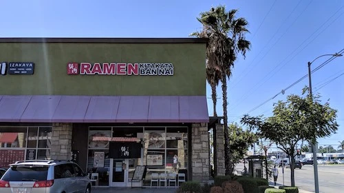 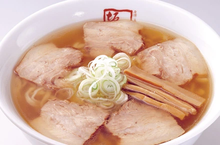 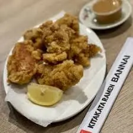This is an amazing small local chain found all over Southern California known to locals for its amazing take on Japanese ramen and cuisine! The flavors found here are absolutely amazing and keep locals forming lines as soon as it is schedule to open. It is definitely a must try if you find yourself near one of their stores found throughout SoCal. But a heads up! It will be busy most days so plan ahead and give the location you are heading to a call just to see what the wait time will be. Just know that the wait will be worth it!
The Source
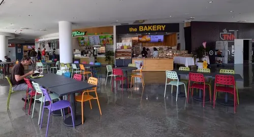Here is a shopping plaza that we recommend if you are looking for a varity of korean/asian fusion to try. Located in Buena Park, just 15 minutes from Anaheim is a shopping plaza influenced by the local population of koreans living in the area. The source is a treasure trove of restruants and small shops that make it a fantastic visit! There is occasional festivals hosted here too and if you find yourself in the area it is worth taking the time to check out this plaza to explore the different avaliable foods and pick up a souvenir or two from the local shops. The source also features a large parking structure built right into the plaza that makes it super convenient to park cause SoCal is known for its heavy traffic and congestion.
Little saigon
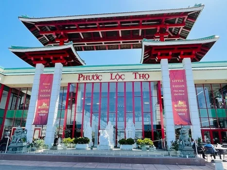 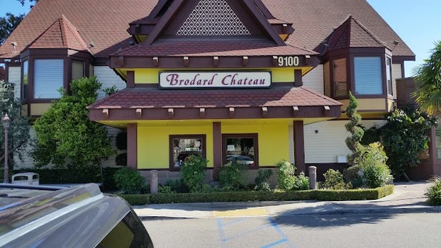 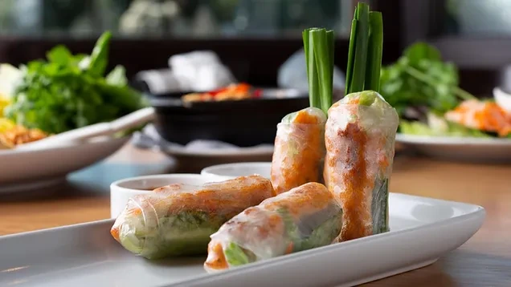Okay fair warning! You can spend multiple days explore this area and still miss out on a bunch of great eats. Also some restruants are CASH ONLY! So come prepared and have a little extra just in case. Like most areas found in SoCal, Little Saigon, located in Orange County south of Anaheim is heavily influnced by the local population. If you are looking for a taste of Vietnam without ever leaving the states, then this is the place to see. Some of SoCal's best pho restruants are located here and while we can't exactly recommend one restruant for its amazing must try pho due to how many there are in this one area alone. We do recommend that you visit one chain vietnamese cuisine found here known as "Brodard Chateau". Its a little on the pricey end but known here locally to be the inventors of the famous "crunchy" spring roll that has since been imitated around the world. This delectable roll is a must try for anyone a fan of any variation of eggrolls or the like.
Worthy Eats
El Farolito Mexican Restruant
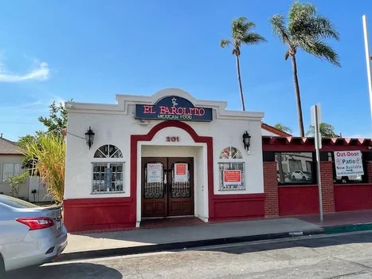 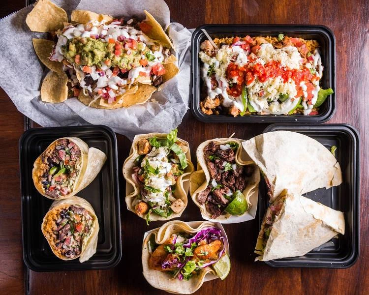An amazing authentic mexican restraunt that we feel is another local gem is El Farolito Mexican Restruant. Located in Fullerton, just slightly northeast of Anaheim by 15 mintues. This amazing eatery is tucked into a small neighborhood with limited parking however, with such good food. We feel it is only right to mention it and its sister restraunt El Farolito Jr. This mexican restraunt has some of the best salsa around with food that doesn't lose out to its amazing flavors. But be warned, the salsa is on the spicier side. All we can say is that this is definitely an eatery you don't wanna miss.
The Hat
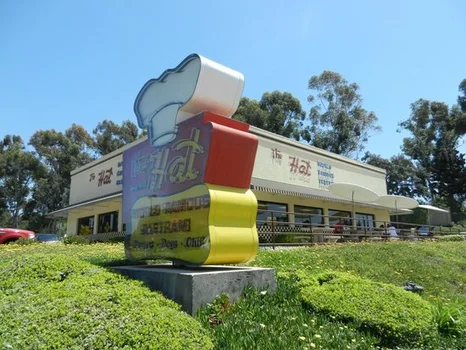 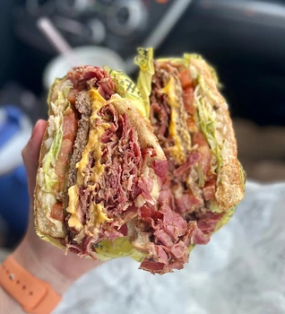Now here is a place that is making it happen with sandwiches! Particularly known by locals for their pastrami sandwiches, The Hat is a must try on your foodie tour of SoCal. With many locations throughout Southern California. If you can find the time, locate one of their locations and give it a try. You won't be disappoint with the sandwiches that are offered.
Desserts
Proto's Bakery
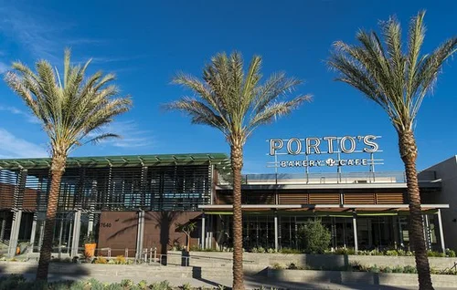 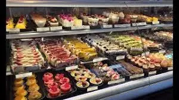Time for some desserts! With locations throughout SoCal, Proto's Bakery is well known. From their delicious cheese rolls to their savory potato balls. You can fill your stomach to the brim with the foods found here in this amazing bakery. Porto's offers a wide selection of baked goods such as cakes and pasteries. Their beautifully crafted and decorated baked goods will leave you awed, both in flavor and visual. You'll be coming back for more once you've had the goods at Portos.